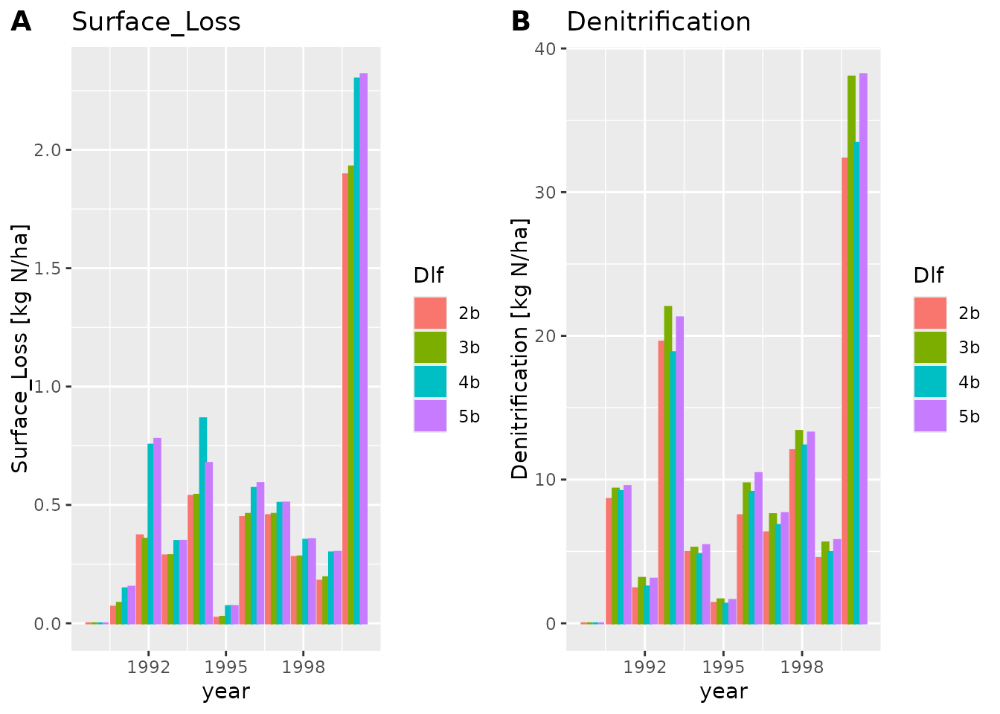
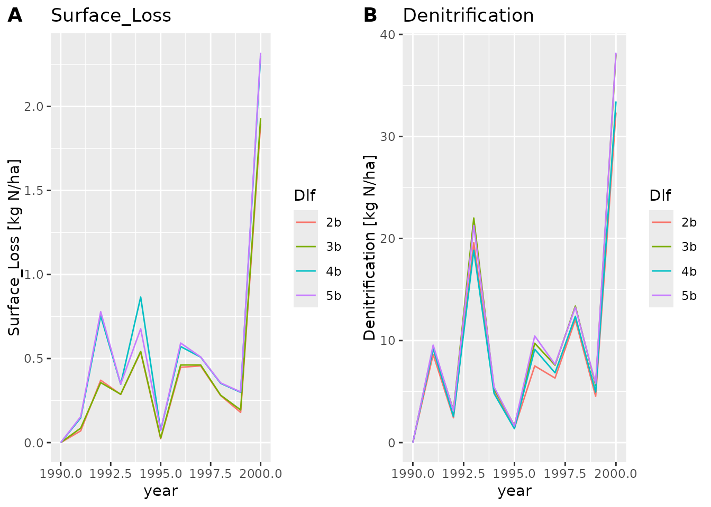
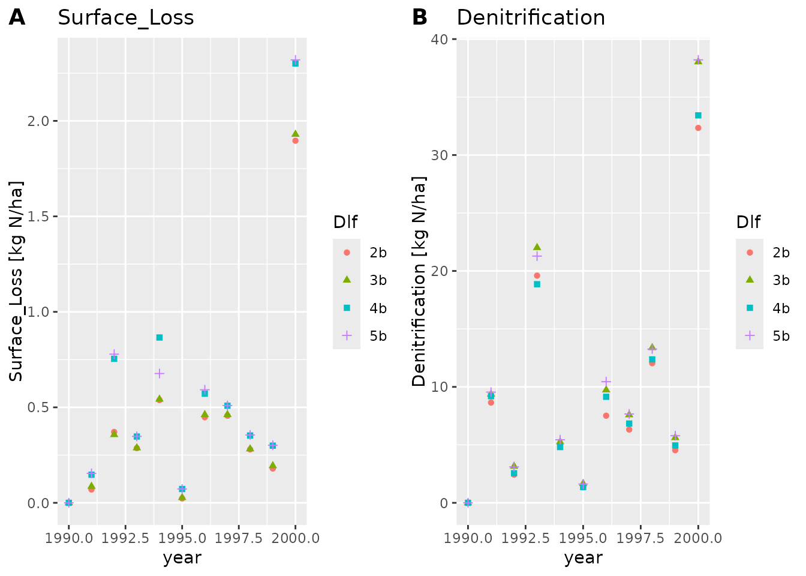
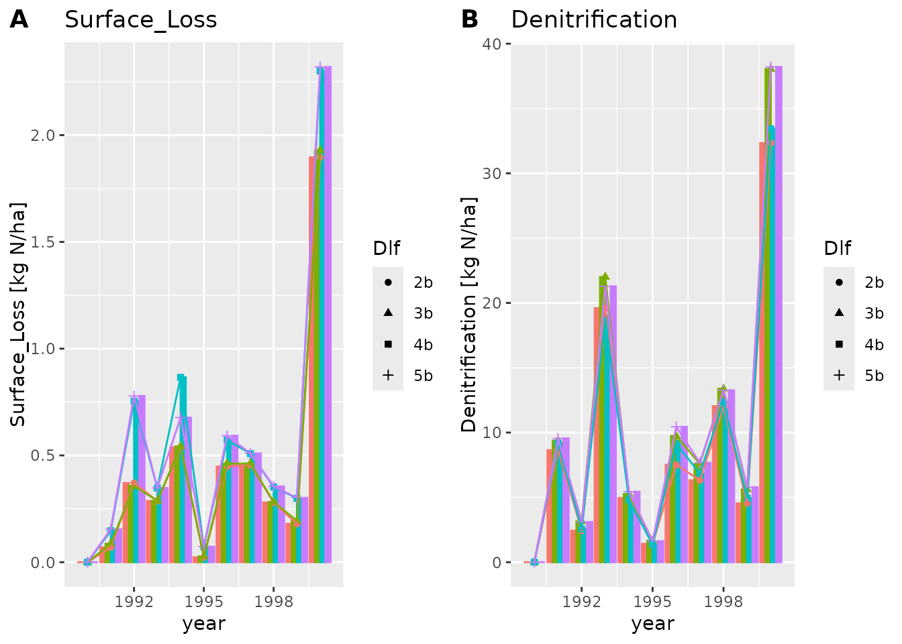
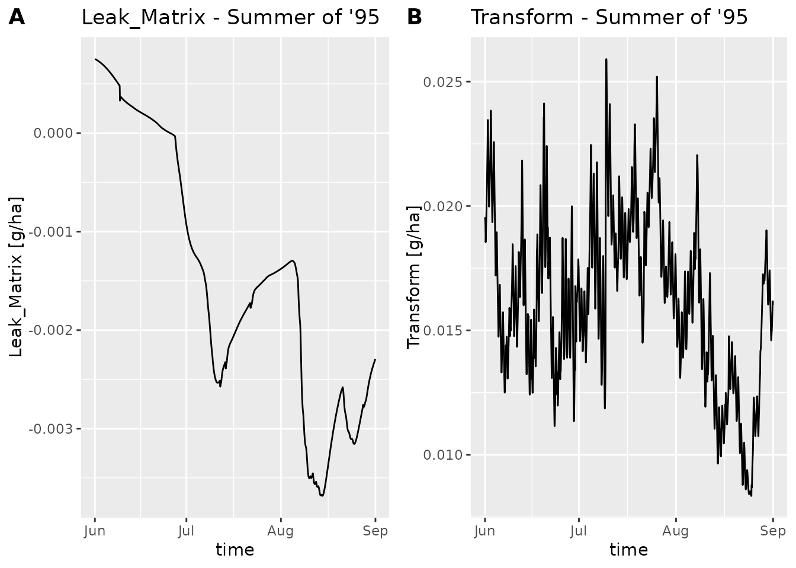

Plotting dlfs
daisy-02-plotting-dlfs.RmdThere is a general plot function plot_dlf as well as
some convenience wrappers around plot_dlf that simplifies
some basic tasks. Here we focus on plot_dlf.
To get started we will load some dlf files with
read_dlf
data_dir <- system.file("extdata", package="daisyrVis")
dlfs <- read_dlf(file.path(data_dir, "annual/Annual-FN"))
dlfs <- strip_common_prefix_from_names(dlfs)These dlfs contain annualy logged variables related to field nitrogen
colnames(dlfs[[1]]@data)
#> [1] "year" "month" "mday"
#> [4] "hour" "Min_Surface_Fertilizer" "Min_Soil_Fertilizer"
#> [7] "Deposition" "Matrix_Leaching" "Biopore_Leaching"
#> [10] "Soil_Drain" "Biopore_Drain" "Surface_Loss"
#> [13] "Min_Surface" "Min_Soil" "Min_Biopores"
#> [16] "Error" "Mineralization" "Immobilization"
#> [19] "Crop_Uptake" "Volatilization" "N2O_Nitrification"
#> [22] "Denitrification" "Fixated" "Org_Fertilizer"
#> [25] "Seed" "Harvest" "Residuals_Surface"
#> [28] "Residuals_Soil" "Org_Surface" "Org_Soil"
#> [31] "Crop" "time"We can plot all the variables, or a subset. Here we plot “Surface_Loss” and “Denitrification”.

Notice how plot_dlf plots each variable in a separate sub
plot, and each scenario (AKA dlf) with a different color.
We can also make a line or points plot, or combine the plots types
plot_dlf(dlfs, "year", y_vars, "lines")
plot_dlf(dlfs, "year", y_vars, "points")
plot_dlf(dlfs, "year", y_vars, "lines-points-bar")
The lines and points plot types are usually better suited when we
have more data points. To see this we will load another dlf file using
read_dlf
path <- file.path(data_dir, "hourly/P2D-Daily-Soil_Chemical_110cm.dlf")
dlf <- read_dlf(path)
colnames(dlf@data)
#> [1] "year" "month"
#> [3] "mday" "hour"
#> [5] "In_Matrix" "In_Biopores"
#> [7] "Leak_Matrix" "Leak_Biopores"
#> [9] "Biopores to matrix" "Matrix to biopores"
#> [11] "Tillage" "Drain_Soil"
#> [13] "Drain_Biopores" "Drain_Biopores_Indirect"
#> [15] "External" "Uptake"
#> [17] "Decompose" "Transform"
#> [19] "Content" "Biopores"
#> [21] "Error" "time"
If we only want to plot a part of the time period we can use
subset_dlf
summer95 <- subset_dlf(dlf, "1995-06-01", "1995-08-31")
plot_dlf(summer95, "time", y_vars, "lines", title_suffix=" - Summer of '95")